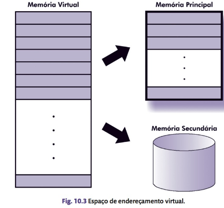
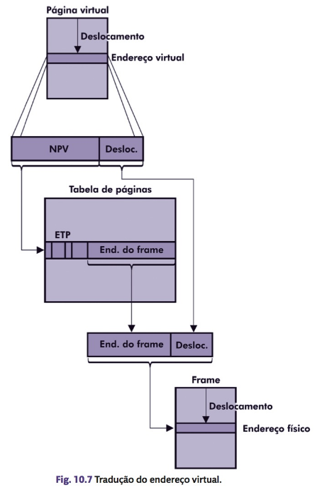
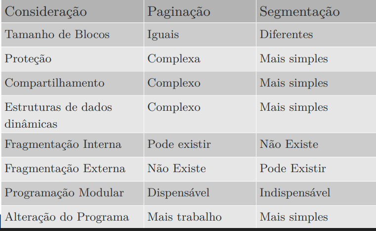

Memória Virtual
1. Introdução
Problema das partições variáveis:
- Fragmentação externa constante, necessitando de intervenção do SO.
- Solução: memória virtual.
Características da Memória Virtual
- Presente em sistemas operacionais modernos.
- Funciona como um overlay, mas implementado pelo SO (não pelo programador).
-
Combina Memória Secundária (MS) e Memória Principal (MP):
- A memória secundária é usada como extensão da memória principal.
- Quando o programa é executado, apenas uma parte dele permanece na memória principal.
- Dá a ilusão de existir uma memória muito maior.
-
Os processos referenciam endereços virtuais, não físicos.
-
O programador não precisa se preocupar com os endereços físicos.
-
Responsáveis pelo mapeamento:
- Compilador: cria instruções com endereços virtuais.
- SO: traduz os endereços virtuais para endereços reais.
Exemplo:
Em máquinas de 32 bits, o processo pode referenciar 2^{32}-1 endereços virtuais, independentemente do tamanho da memória física.
Vantagens:
- Maior número de processos residentes na memória principal.
- Uso mais eficiente do processador.
- Minimiza problemas de fragmentação da memória principal.
2. Implementação
- Implementada diretamente no hardware.
- Depende da arquitetura do processador.
- Desvantagem: requer mecanismos de tradução de endereços virtuais para físicos.

3. Mapeamento de Endereços
O processador só executa instruções em endereços reais.
MMU (Memory Management Unit)
- Traduz endereços virtuais para físicos.
- Atua sempre que um endereço virtual é referenciado.
- Localizada no hardware.
Tabela de mapeamento (uma por processo)
- Contém relação entre endereços virtuais e reais.
- Alterada a cada troca de contexto.
Registrador de base
- Aponta para a tabela do processo corrente.
-
Tabela dividida em blocos:
-
Facilita o gerenciamento de processos com endereços virtuais grandes.
- Quanto maior o bloco, menor o número de entradas na tabela.
TLB (Translation Lookaside Buffer)
- Cache da MMU para endereços virtuais.
- Se o endereço não estiver na TLB, acessa a memória.
4. Paginação
Paginação: divisão do espaço de endereçamento em blocos de tamanho fixo.
Páginas virtuais: na memória virtual.
Frames (ou páginas reais): na memória principal.
Tabela de Páginas (ETP):
- Cada processo possui uma.
- Cada página virtual tem uma entrada.
- NPV (Número da Página Virtual): índice para localização.
Execução de um programa:
- Páginas virtuais são transferidas da MS para MP quando necessário.
- Endereço físico obtido a partir do frame e deslocamento na página.

4.1 Bit de Validade
- Indica se a página está na memória principal.
-
Se não estiver, ocorre page fault:
-
O processo passa de execução para espera.
- O SO transfere a página da MS para MP (page in).
4.2 Taxa de Paginação
- Número de page faults gerados por processo em um intervalo de tempo.
4.3 Políticas de Busca de Páginas
- Por demanda: carrega a página apenas quando referenciada.
- Antecipada (pre-paging): carrega páginas adjacentes que podem ser usadas.
4.4 Práticas de Alocação de Páginas
Alocação fixa: número fixo de frames por processo.
Alocação variável: número de frames pode mudar conforme a taxa de page faults.
4.5 Políticas de Substituição de Páginas
Page out:
- Libera páginas quando atingido o limite de frames.
- Verifica se a página foi modificada antes de salvar.
Page file:
- Arquivo onde páginas modificadas são armazenadas.
Tipos:
- Local: apenas páginas do processo que gerou o page fault.
- Global: qualquer página da memória principal.
Working set:
-
Conjunto de páginas referenciadas recentemente pelo processo.
-
Leva em conta localidade espacial e temporal.
Algoritmos de substituição:
- Ótimo:baseado em previsão futura (teórico).
- Aleatório: escolhe qualquer página.
- FIFO: remove a página mais antiga.
- LFU: remove a menos referenciada.
- LRU: remove a menos recentemente usada.
- NRU:utiliza bit de referência.
- Clock: variação do FIFO com bit de uso.
4.6 Tamanho de Páginas
Páginas pequenas: resultam em tabelas maiores, mais page faults, mas melhor uso da MP.
Páginas grandes: resulam em tabelas menores e maior fragmentação interna.
Paginação em múltiplos níveis: evita tabelas gigantes, organiza em camadas.
5. Proteção de Memória
Impede que programas alterem páginas não autorizadas e usa bits de permissão na tabela de páginas:
- 00: sem acesso.
- 10: leitura.
- 11: leitura e gravação.
Segmentação: Divide memória em segmentos lógicos e facilita modularidade e organização.
Segmentação com Paginação: Grandes segmentos divididos em páginas para melhor gerenciamento.
